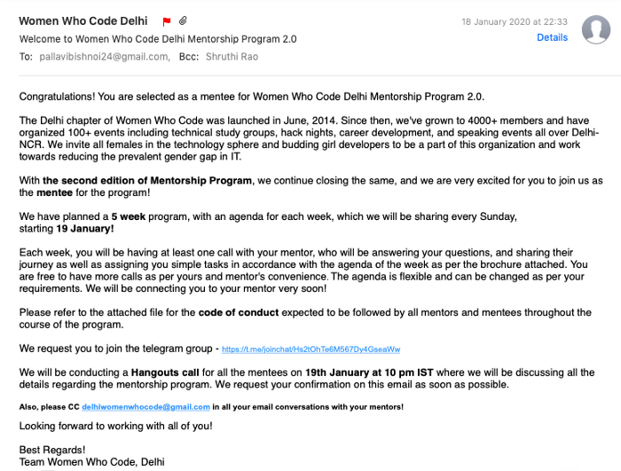
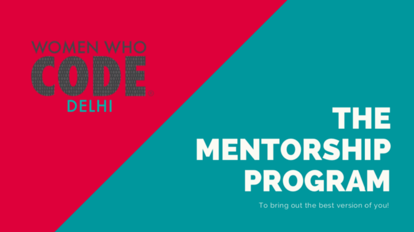
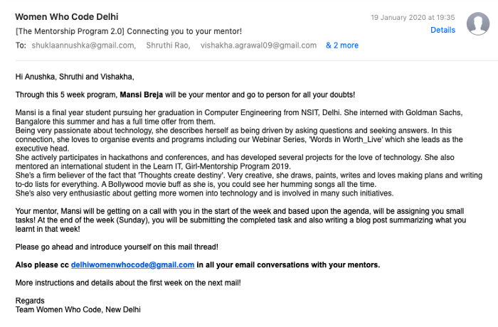
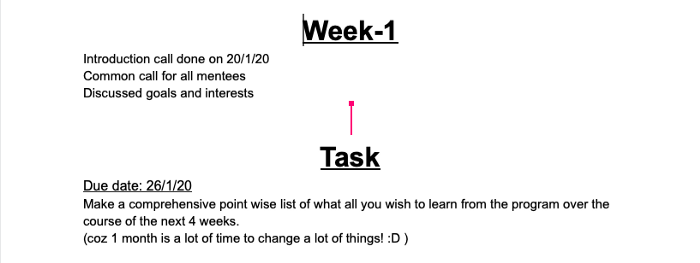

Of emails, Hangouts and lists! - Mentorship Program 2.0 Week 1
It all started with an eagerly awaited email from the Women Who Code team on the 18th of January. I was selected to be part of the Women Who Code Mentorship Program 2.0. As to be expected, I was super excited to continue my journey of learning — this time, with the guidance of a mentor, someone who had once been in the same position as I was in and who would help me throughout.

This first email briefed us about the program’s structure and also included a code of conduct that we were all expected to abide by. The Mentorship Program is a 5-week program designed to help us maximise our takeaways. Something that I personally love about this program is its flexibility. There is no hard and fast scheme that a mentee would be expected to stick to. On the contrary, it is the mentee who puts forward what she wants to learn over the course of the program. I joined the group chat created to connect all the mentees and mentors which would serve as a common channel of communication.

The second email was an invite to a video conference with all the mentees part of the program and a couple of mentors. More about this to follow later! Soon after this one, followed a third email (the exciting one!). I was finally connected to both my mentor, Mansi Breja and my fellow mentees Anushka and Vishakha who had the same mentor. We were all asked to introduce ourselves in the mail thread. I realised I was the only first year student, and my fellow mentees were in their second year.

Finally, it was time for our first common video conference. Aside from a few technical issues in the beginning, this was a very pleasant experience where all the mentees had a chance to introduce themselves and get to know each other. By the end of it, we were all more than ready to start the first week of the program! Not long after, Mansi di scheduled a Hangout for the three of us so that we could get started. In this call, she first introduced herself and then asked us to tell her what exactly we expected to learn over the course of the program one by one. She also congratulated us on making it through the initial screening for the selection of mentees! We discussed various open-source opportunities, internships, the importance of a good resume and resume-building, and research opportunities among other topics. We all talked for almost an hour that day, with Mansi di sharing a bit of her own experience towards the end of the call. She is very humble and pleasant to talk to! (and I look forward to picking her brains over the upcoming four weeks :P) She ensured us that we could seek her help even after the program officially wrapped up. :’)
Our task for the week was outlining our personal goals in a neat, comprehensive, point-wise list. Being a freshman (moreover with no prior CS background in high school), my goals are largely related to how I can go about making my first project and learning more about open-source. I really hope to participate in this year’s RGSoC so I hope to learn enough by then :D

I am certain this program will have a great impact on my journey of learning more in this world of coding!